Praktikum 11 Ruumiandmete visualiseerimine
11.1 Avaldised
Avaldised (expressions) on tehted ja vormelid, mille abil hõlpsalt muuta atribuutide väärtusi, luua uusi (virtuaalseid) atribuute või kihte, andmetest alamhulki välja filtreerida, teha statistikat jne. Avaldiste abil saab andmeid QGISis mitmekülgsemalt analüüsida ning visualiseerida.
Avaldisi saab QGISis kasutada mitmes kohas, näiteks
- objektide valimiseks Select Features by Expression tööriista abil,
- objektide valimiseks atribuuttabeli alumisest vasakust nurgast Advanced Filter (Expression),
- atribuutide muutmiseks Field calculator’is,
- Query builder’is,
- sümbolite, siltide või paigutuse parameetrite reeglipõhisel muutmisel,
- Database Manager’is,
- jne.

 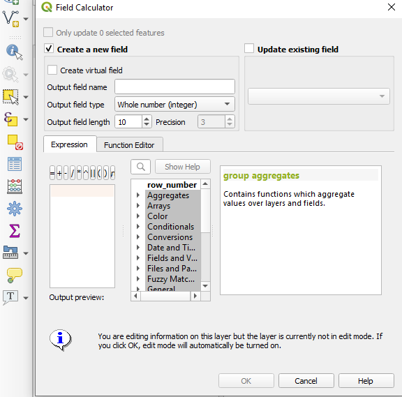
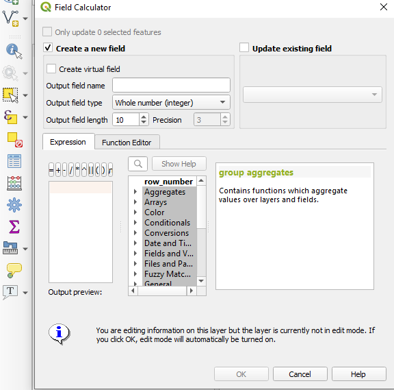 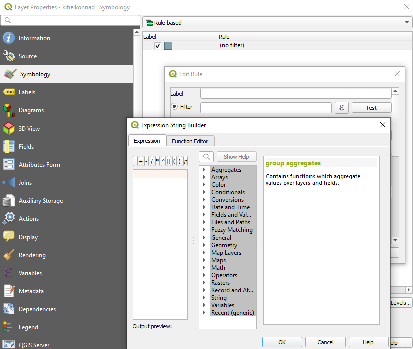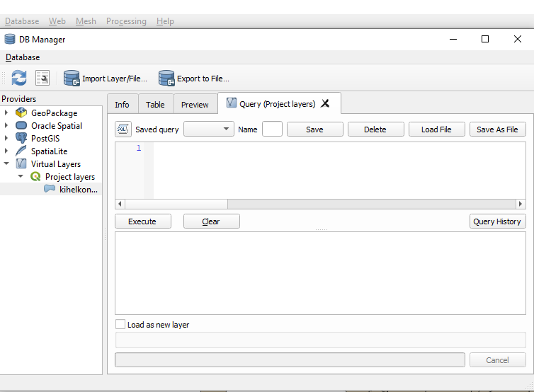
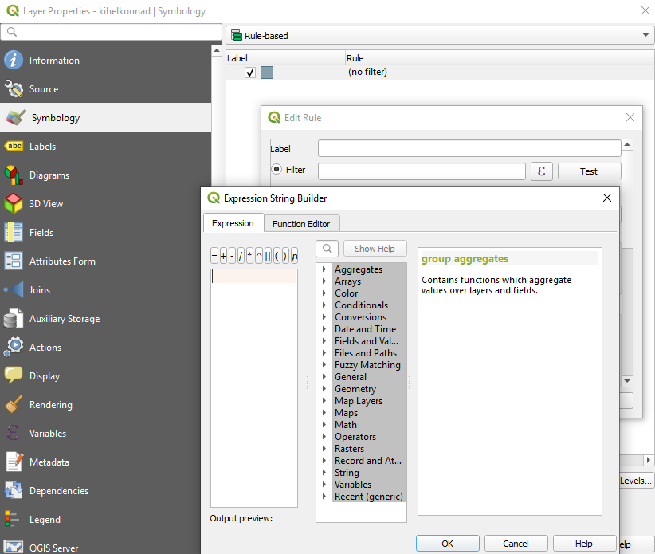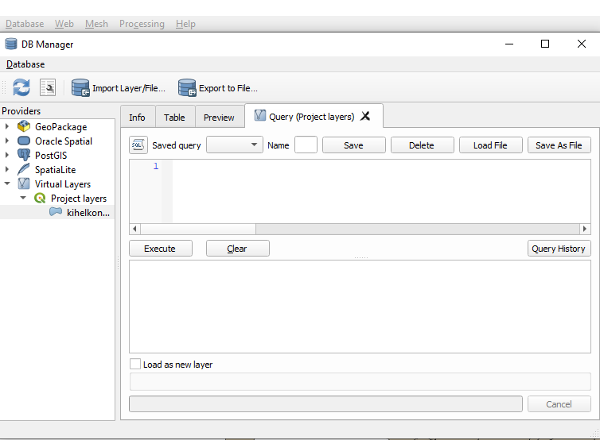
Figure 11.1: Avaldised 1) Select Features by Expression, 2) Advanced Filter (Expression), 3) Field Calculator, 4) Query Builder, 5) Rule-based symbology, 6) DB Manager
Avaldisi saab eeldefineeritud funktsioonide abil koostada mitmeks erinevaks otstarbeks, vaata ülevaadet siit. Sealjuures saab sageli üht ja sama asja teha erineval moel.
Vaatame sel korral ülesannete toel lähemalt matemaatilisi funktsioone (Math), operaatoreid (Operators), tingimuslauseid (Conditionals) ning teksti muutmise võimalusi (String).
Lisaks eeldefineeritud funktsioonidele saab kasutada ka SQL-i päringuid, näiteks:
- Ridade ja tulpade valimine
- SELECT tulp FROM andmestik;
- vali andmestikust ainult üks tulp
- vali andmestikust ainult üks tulp
- SELECT tulp1, tulp2 FROM andmestik;
- vali andmestikust kaks tulpa
- vali andmestikust kaks tulpa
- SELECT DISTINCT tulp FROM andmestik;
- vali andmestikust tulba unikaalsed väärtused
- vali andmestikust tulba unikaalsed väärtused
- SELECT * FROM andmestik;
- vali andmestikust kõik read ja tulbad
- vali andmestikust kõik read ja tulbad
- SELECT * FROM andmestik WHERE tulp = ‘Mingi väärtus’;
- vali andmestikust kõik tulbad ja read, kus tulbas ‘tulp’ on väärtus ‘Mingi väärtus’
- vali andmestikust kõik tulbad ja read, kus tulbas ‘tulp’ on väärtus ‘Mingi väärtus’
- SELECT tulp1, tulp2 FROM andmestik WHERE tulp1 > 50 AND tulp2 ILIKE ‘%St%’;
- vali andmestikust tulbad ‘tulp1’ ja ‘tulp2’ ning ainult sellised read, kus tulp1 väärtused on suuremad kui 50 ja kus tulp2s on lahtris kuskil tähejärjend ‘St’
- SELECT tulp FROM andmestik;
- Muutmine
- UPDATE andmestik SET tulp = ‘Mingi uus väärtus’ WHERE tulp = ‘Mingi vana väärtus’;
- uuenda andmestikku nii, et sea tulba ‘tulp’ väärtuseks ‘Mingi uus väärtus’ nendel ridadel, kus tulba ‘tulp’ väärtus on praegu ‘Mingi vana väärtus’
- UPDATE andmestik SET tulp = ‘Mingi uus väärtus’ WHERE id = 8;
- uuenda andmestikku nii, et sea tulba ‘tulp’ väärtuseks ‘Mingi uus väärtus’ sellel real, kus id väärtus on 8
- UPDATE andmestik SET tulp = ‘Mingi uus väärtus’ WHERE tulp = ‘Mingi vana väärtus’;
- Lisamine
- INSERT INTO andmestik (tulp1, tulp2, tulp3, tulp4) VALUES (‘tulp1 väärtus’, ‘tulp2 väärtus’, ‘tulp3 väärtus’, ‘tulp4 väärtus’);
- sisesta andmestikku üks rida, kus tulpadesse ‘tulp1’, ‘tulp2’, ‘tulp3’ ja ‘tulp4’ lähevad vastavalt väärtused ‘tulp1 väärtus’, ‘tulp2 väärtus’, ‘tulp3 väärtus’ ja ‘tulp4 väärtus’
- sisesta andmestikku üks rida, kus tulpadesse ‘tulp1’, ‘tulp2’, ‘tulp3’ ja ‘tulp4’ lähevad vastavalt väärtused ‘tulp1 väärtus’, ‘tulp2 väärtus’, ‘tulp3 väärtus’ ja ‘tulp4 väärtus’
- INSERT INTO andmestik (tulp1, tulp2, tulp3, tulp4) VALUES (‘tulp1 väärtus’, ‘tulp2 väärtus’, ‘tulp3 väärtus’, ‘tulp4 väärtus’);
- Kustutamine
- DELETE FROM andmestik WHERE tulp = ‘Mingi väärtus’;
- kustuta andmestikust read, kus tulbas ‘tulp’ on väärtus ‘Mingi väärtus’
- kustuta andmestikust read, kus tulbas ‘tulp’ on väärtus ‘Mingi väärtus’
- DELETE FROM andmestik WHERE tulp = ‘Mingi väärtus’;
- Järjestamine
- SELECT tulp1, tulp2, tulp3 FROM andmestik ORDER BY tulp1;
- vali andmestikust ainult tulbad ‘tulp1’, ‘tulp2’ ja ‘tulp3’ ning järjesta uus andmestik ‘tulp1’ väärtuste järgi (vaikimisi väiksemast suuremani või A-st Z-ni)
- vali andmestikust ainult tulbad ‘tulp1’, ‘tulp2’ ja ‘tulp3’ ning järjesta uus andmestik ‘tulp1’ väärtuste järgi (vaikimisi väiksemast suuremani või A-st Z-ni)
- SELECT tulp1, tulp2, tulp3 FROM andmestik ORDER BY tulp1, tulp2;
- vali andmestikust ainult tulbad ‘tulp1’, ‘tulp2’ ja ‘tulp3’ ning järjesta uus andmestik ‘tulp1’ ning siis ‘tulp2’ väärtuste järgi
- vali andmestikust ainult tulbad ‘tulp1’, ‘tulp2’ ja ‘tulp3’ ning järjesta uus andmestik ‘tulp1’ ning siis ‘tulp2’ väärtuste järgi
- SELECT tulp1, tulp2, tulp3 FROM andmestik ORDER BY tulp1;
- Grupeerimine
- SELECT tulp1, tulp2 FROM andmestik GROUP BY tulp1;
- vali andmestikust tulbad ‘tulp1’ ja ‘tulp2’ ning grupeeri andmed ‘tulp1’ unikaalsete väärtuste järgi
- SELECT tulp1, tulp2 FROM andmestik WHERE tulp1 = ‘Mingi väärtus’ GROUP BY tulp2;
- vali andmestikust tulbad ‘tulp1’ ja ‘tulp2’ ning ainult read, kus tulbal ‘tulp1’ on väärtused ‘Mingi väärtus’, grupeeri saadud tabel ‘tulp2’ unikaalsete väärtuste järgi
- SELECT tulp1, tulp2 FROM andmestik GROUP BY tulp1;
Põhimõtteliselt on selline SQLi päringusüsteem kõikide filtreerimiste, kihtide loomiste, muutmiste, suure osa operaatorite, funktsioonide jm taustal. QGIS paneb ise päringud SQLi keelde.
Katsetame! Impordime esmalt QGISi
- kihelkondade shapefile’i (EKI, Peeter Päll),
- shapefile’i, mis sisaldab andmeid ei ole ja pole eituskonstruktsioonide levikust eesti murretes Andrus Saareste 1955. aasta “Väikese Eesti murdeatlase” põhjal (vaata lähemalt siit),
- CSV-faili, mis sisaldab andmeid ei ole ja pole suhtelisest sagedusest Eesti murrete korpuses. NB! Kodeering on UTF-8, välju eraldab semikoolon, esimesel real on tulbanimed ning koordinaatide infot failis ei ole.

Figure 11.2: Lisatud kihid
11.2 Ülesanne 1: “ei ole”/“pole” suhtelised sagedused
- Tee koopia kihelkondade kihist (nimeta see nt kihelkonnad2).
- paremklikk kihelkondade kihil -> Duplicate Layer,
- paremklikk kihil kihelkonnad copy -> Rename Layer
- Ühenda andmestik eiole_pole_mk_props kihiga kihelkonnad2. Esmalt kontrolli, kas ühendamine võiks üldse korralikult õnnestuda, st kas mõlemas kihis viidatakse samadele kihelkondadele ühtmoodi. Selleks, et leida kihelkonnad/murrakud, mis on kahele kihile ühised, saab kasutada SQLi päringut
SELECT Murrak FROM eiole_pole_mk_props INTERSECT SELECT Parish_id FROM kihelkonnad2;. Selleks, et leida aga kihelkonnad, mida teises andmestikus ei ole, võib kasutada päringutSELECT Murrak FROM eiole_pole_mk_props EXCEPT SELECT Parish_id FROM kihelkonnad2;. Kasuta päringu tegemiseks DB Manageri. Kui oled vajutanud nupul Execute, väljastatakse alumisse aknasse need murrakute nimed, mis on küll andmestikus eiole_pole_mk_props tulbas Murrak, ent mida ei ole sellisel kujul andmestikus kihelkonnad2 tulbas Parish_id.

Figure 11.3: Vigase kihelkonnanime tuvastamine
- Paranda CSV-kihis selle murraku nime, mis ei sisaldu kihelkondade shapefile’is. Kuna CSV-faili atribuute muuta ei saa, lisa kihile uus virtuaalne atribuut Murrak2, kus asendad vigase nime õigega (kasuta tingimuslauset).
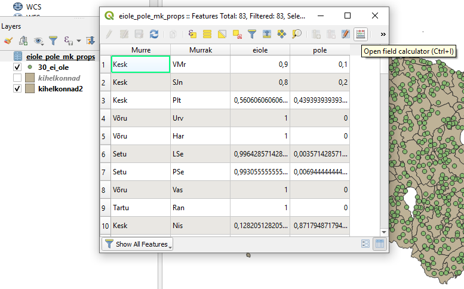Figure 11.4: Uue virtuaalse atribuudi loomine

Figure 11.5: Uue virtuaalse atribuudi loomine (2)
- Lisa kihile kihelkonnad2 ei ole/pole andmed. Kasuta vastavalt Parish_id ja Murrak2 tulpasid.
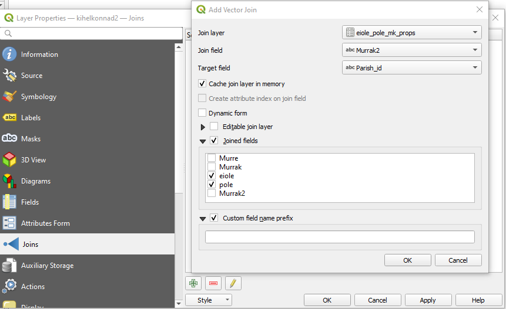Figure 11.6: Kihtide ühendamine
- Värvi ei ole/pole proportsioonide infoga täiendatud kihi kihelkonnad2 polügoonid vastavalt ei ole suhtelisele sagedusele kihelkonnas/murrakus nii, et halliga oleksid märgitud ka kihelkonnad, millest murdekorpuse sagedusinfot ei ole. Selleks peab kasutama reeglipõhist sümboloogiat.

Figure 11.7: Reeglipõhine polügoonide värvimine
11.3 Ülesanne 2: “ei ole”/“pole” selged eelistused
- Tee kihist kihelkonnad2 duplikaat nimega kihelkonnad3.
- Kasutades reeglipõhist polügoonide värvimist, kuva kihil kihelkonnad3 värviliselt ainult sagedused, mille puhul ei ole ja pole proportsioonide absoluuterinevus on vähemalt 0,5. Ülejäänud polügoonidele (sh puuduvatele väärtustele) määra hall värv.
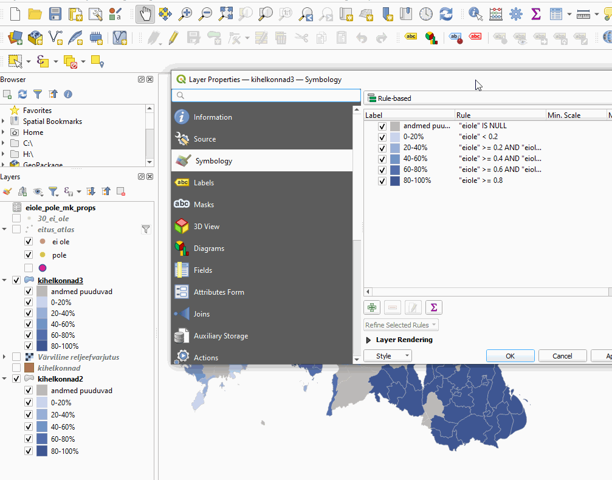Figure 11.8: Suured sageduserinevused
- Nüüd muuda reegleid nii, et kihelkonnad, mille puhul ei_ole ja pole vahe on negatiivne (-0,5 või vähem), on sinised, ja need, mille vahe on positiivne (0,5 või suurem), on punased.
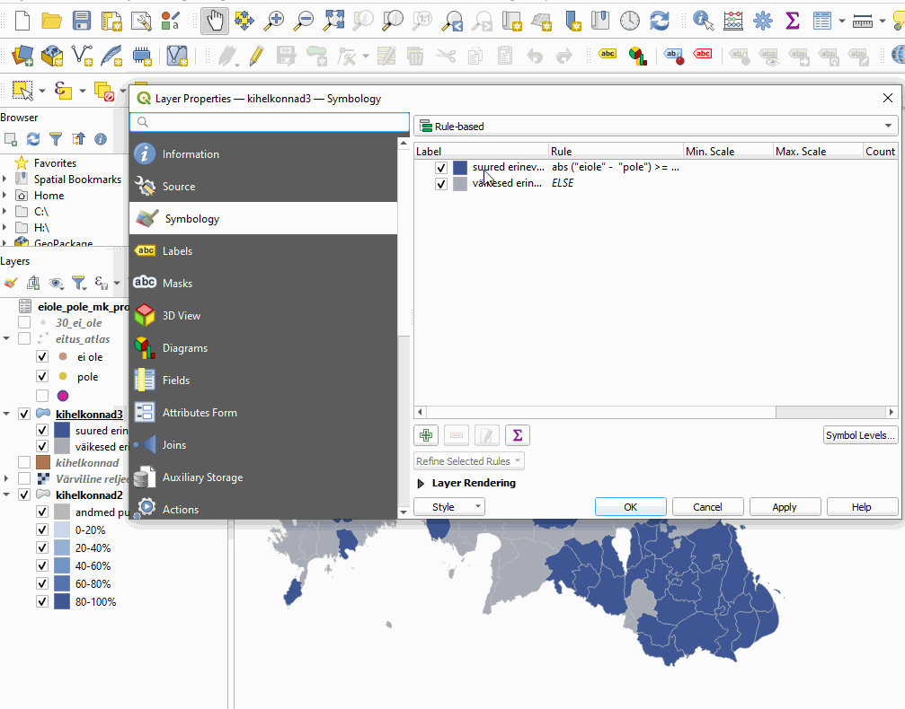Figure 11.9: ‘ei ole’ ja ‘pole’ konstruktsioonide eelistused murrakutes
11.4 Ülesanne 3: tekstiatribuutide muutmine
- Muuda kihil kihelkonnad3 eestikeelsete murrete nimetustes kõik Setu murded Seto murreteks, kasutades CASE-tingimuslauset.
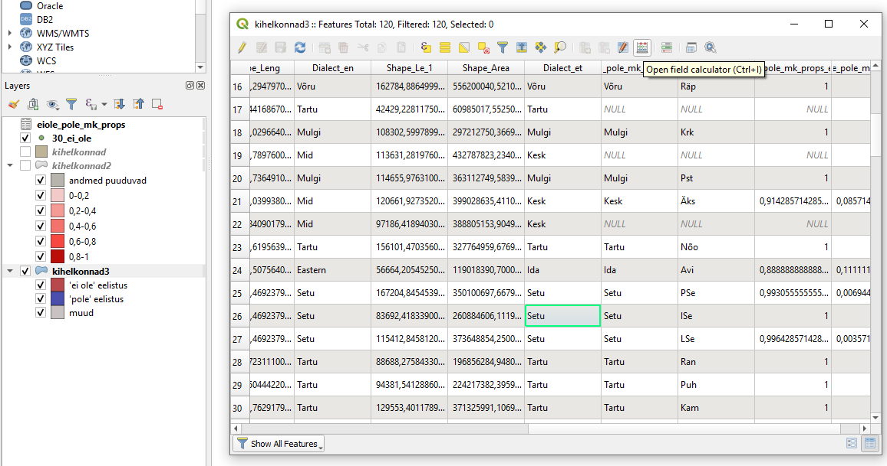Figure 11.10: Setu murre atribuuttabelis

Figure 11.11: Setu murre Seto murdeks
- Muuda kihil kihelkonnad3 ingliskeelsete murrete nimetustes kõik Setu murded Seto murreteks, kasutades if-tingimuslauset.

Figure 11.12: Setu murre Seto murdeks (2)
- Leia kõik kihelkondade nimed, mille saksakeelne nimi algab lühendiga St. ning muuda see Sankt’iks, kasutades regulaaravaldist.
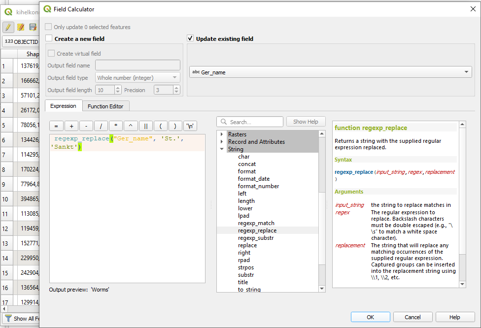Figure 11.13: ‘St.’ muutmine ‘Sankt’-iks
- Leia kõik kihelkonnad, mille nimed lõppevad la-ga (nt Ambla) ja asenda need lõpud uues tulbas LA-ga (AmbLA), kasutades regulaaravaldist.
Põhimõtteliselt võiksime kasutada DB Manageris ka UPDATE CASE WHERE lauseid, ent kuna ükski meie kihtidest ei ole QGISi jaoks päris andmebaas, siis saame teha DB Manageris ainult päringuid, aga tabelit muuta ei saa. Saame aga eksportida mõne virtuaalse kihi näiteks GeoPackage-formaadis failina ning seda uuesti sisse lugedes saame andmestikku DB Manageris ka SQL-lausete abil muuta.